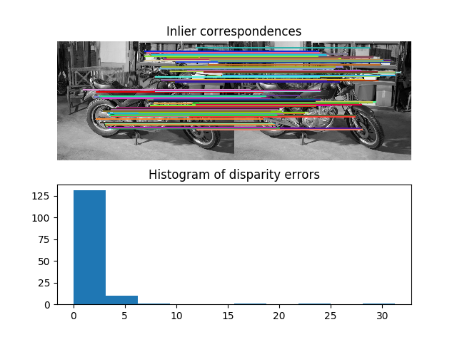

Source
SourceNote
Click here to download the full example code or to run this example in your browser via Binder
Fundamental matrix estimation¶
This example demonstrates how to robustly estimate epipolar geometry (the geometry of stereo vision) between two views using sparse ORB feature correspondences.
The fundamental matrix relates corresponding points between a pair of uncalibrated images. The matrix transforms homogeneous image points in one image to epipolar lines in the other image.
Uncalibrated means that the intrinsic calibration (focal lengths, pixel skew, principal point) of the two cameras is not known. The fundamental matrix thus enables projective 3D reconstruction of the captured scene. If the calibration is known, estimating the essential matrix enables metric 3D reconstruction of the captured scene.
Out:
Number of matches: 223
Number of inliers: 164
import numpy as np
from skimage import data
from skimage.color import rgb2gray
from skimage.feature import match_descriptors, ORB, plot_matches
from skimage.measure import ransac
from skimage.transform import FundamentalMatrixTransform
import matplotlib.pyplot as plt
np.random.seed(0)
img_left, img_right, groundtruth_disp = data.stereo_motorcycle()
img_left, img_right = map(rgb2gray, (img_left, img_right))
# Find sparse feature correspondences between left and right image.
descriptor_extractor = ORB()
descriptor_extractor.detect_and_extract(img_left)
keypoints_left = descriptor_extractor.keypoints
descriptors_left = descriptor_extractor.descriptors
descriptor_extractor.detect_and_extract(img_right)
keypoints_right = descriptor_extractor.keypoints
descriptors_right = descriptor_extractor.descriptors
matches = match_descriptors(descriptors_left, descriptors_right,
cross_check=True)
# Estimate the epipolar geometry between the left and right image.
model, inliers = ransac((keypoints_left[matches[:, 0]],
keypoints_right[matches[:, 1]]),
FundamentalMatrixTransform, min_samples=8,
residual_threshold=1, max_trials=5000)
inlier_keypoints_left = keypoints_left[matches[inliers, 0]]
inlier_keypoints_right = keypoints_right[matches[inliers, 1]]
print(f"Number of matches: {matches.shape[0]}")
print(f"Number of inliers: {inliers.sum()}")
# Compare estimated sparse disparities to the dense ground-truth disparities.
disp = inlier_keypoints_left[:, 1] - inlier_keypoints_right[:, 1]
disp_coords = np.round(inlier_keypoints_left).astype(np.int64)
disp_idxs = np.ravel_multi_index(disp_coords.T, groundtruth_disp.shape)
disp_error = np.abs(groundtruth_disp.ravel()[disp_idxs] - disp)
disp_error = disp_error[np.isfinite(disp_error)]
# Visualize the results.
fig, ax = plt.subplots(nrows=2, ncols=1)
plt.gray()
plot_matches(ax[0], img_left, img_right, keypoints_left, keypoints_right,
matches[inliers], only_matches=True)
ax[0].axis("off")
ax[0].set_title("Inlier correspondences")
ax[1].hist(disp_error)
ax[1].set_title("Histogram of disparity errors")
plt.show()
Total running time of the script: ( 0 minutes 3.817 seconds)